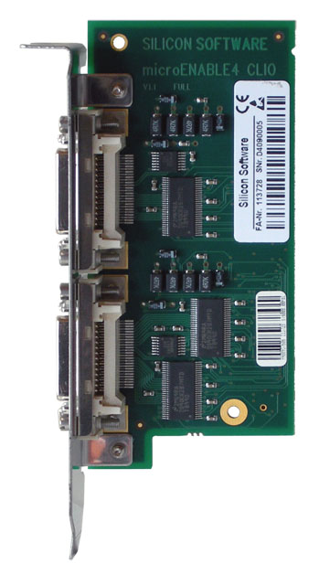

Image Selector
Parameter Set
Description
The Image Selector allows the user to cut out a period of p images from the image stream and select a particular image n from it.
A typical setup to use this module would be the following: 2 computers, 2 frame grabbers and 1 CameraLinl IO board
(see also: CameraLink IO board (CLIO) for microEnable III and CameraLink IO board (CLIO) for microEnable IV).

The CLIO module distributes the camera output to p frame grabbers by copying the image data. The image selector on each frame grabber is programmed to accept only one of p images, which decreases the framerate for each PC.
For the example in the Figure above, the image stream is devided into sets of two images. The PC1 accepts all even images and PC2 all odd images. Therefore, the Image Selector configuration is:
PC1
- Image Select Period = 2
- Image Select = 0
PC2
- Image Select Period = 2
- Image Select = 1
Parameters
Image Select Period
This specifies the number of images of each image set acquired from the image stream. If you use the Image Selector to do parallel processing on several PCs, this parameter needs to have the same value on each PC.
Image Select
The parameter Image Select specifies a particular image from the image set defiened by Image Select Period. If you use the Image Selector to do parallel processing, this parameter needs to be different for each PC to ensure every computer is processing a different image.
References
| Forward |